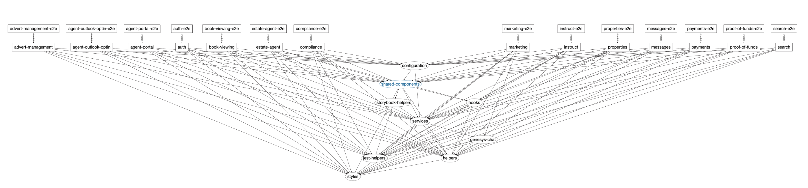

Micro-frontends - A Journey
👋 Hello Everybody 👋
Content
- Purplebricks frontend journey
- Problems we were trying to solve
- How we landed on Nx
- Benefits & Lessons learnt


Nx is a smart and extensible build framework to help you architect, test, and build at any scale
😀 Benefits 😀
- Standardised libraries
- Enforce code standards
- Code sharing
- Standardised deployments
- Versioning
- Development experience
Standardised libraries

Code sharing
Code standards
Deployments
- Single pipeline for all apps
-
nx affected:apps - Unit & Shallow integration tests built into pipeline
Versioning
- Single verion of library
- Keep all apps in sync
- Less risk of unexpected breaking changes
- No sprints wasted bumping library versions
Development experience
- Circa 2-3 days to deploy new app to QA
-
nx g @nrwl/next:app becky-quotes && yarn generate - Easy to onboard new colleagues
- 100% unit code coverage
- Automated dependency management
😢 Lessons Learnt 😢
- Library structure & size
- Build times
- Deployment options
Dependency Graph
Server / Client / Static
Summary
- Really happy with Nx 🎉
- We need to fix out dependency graph
- We want to offer more deployment options